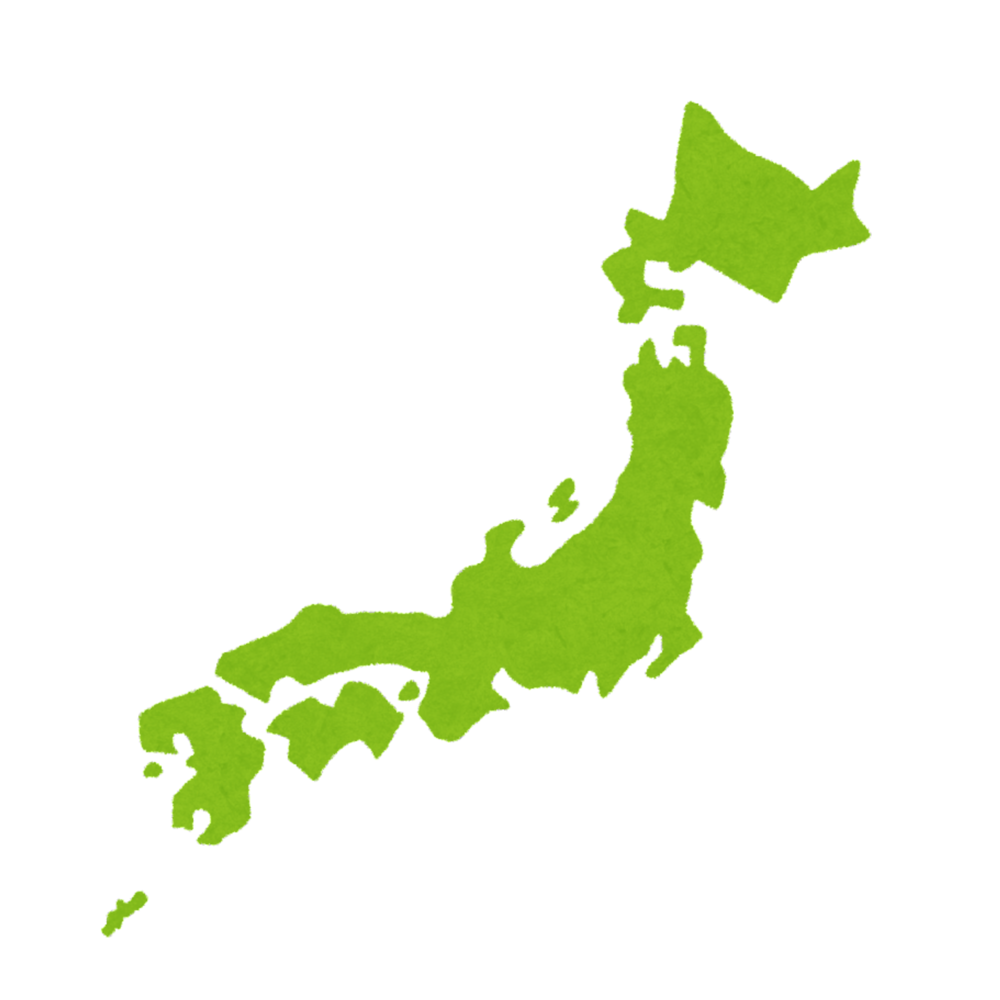

日本の地方区分
日本は北海道・東北・関東・中部・近畿・中国・四国・九州から構成されている。
更新頻度：固定

今週の都道府県紹介
長野県
「日本三大外国人避暑地」
丘陵や山脈が多く自然条件の厳しい地域であった一方で、明治以後は鉄道などの開通により首都圏や中京圏からのアクセスが良好になったことから[4][5]、近代以降は軽井沢や安曇野、上高地を筆頭とした高原リゾート・山岳リゾートが多いことでも知られる。
日本の基本的なポイント
島国の地理：山地が多く、国土の約７５％が山や丘陵。富士山は日本の最高峰！
西暦 ：年
気候 ：春夏秋冬が明確で、梅雨や台風などの季節特有の気象もある。温帯に属している。
文化 ：着物、能、歌舞伎などの伝統文化から、アニメ漫画などの現代文化まで幅広い。
政治や社会：立憲君主制で、天皇は省庁、政治は内閣と国会が担う。
更新頻度：不定期
先頭へ戻る
公開日：7月1日